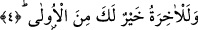
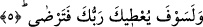

oldu ki Cebrâil bana gelmiyor?” diye sorar. Havle şöyle cevap verir: “Evi
süpürüyordum, süpürgemi sedirin altına uzattığımda bir de ne göreyim küçük bir köpek
yavrusu oracıkta ölmüş, onu alıp duvarın arkasına attım.” Peygamber Efendimiz (s.a.)’e
hayasından bir titreme gelir. Peygamber Efendimiz (s.a.)’e vahiy indiğinde kendisini bir
titreme alırdı. Efendimiz hizmetçisine dönerek “üstümü ört” dedi ve bundan sonra
yukarda okuduğumuz âyet-i kerime indi. Cebrâil inince Efendimiz neden geç geldiğinin
sebebini sordu. Cebrâil; “Bilmez misin bizler içinde köpek ve sûret olan eve girmeyiz”
[127] dedi. Bu âyetin iniş sebebi olarak daha başka olaylar da anlatılır.
Burada işâret olunuyor ki Peygamber Efendimiz (s.a.) terk-i evla kabilinden bir fiil
işlemiş. Bundan dolayı Efendimiz’e kızılmamış, gazaba uğramamış. Sadece
yetiştirilmesi ve irşad olunması için vahye bir süre ara verilmiş.
et-Te’vilâtü’n-Necmiyye’de bu âyet-i kerime şöyle tefsir olunuyor: Rabbin nübüvvet
ve risalet feyzini zâhirînden kesmek sûretiyle seni terketmedi. Bâtınından velâyet feyzini
keserek sana buğz da etmedi.
4. Gerçekten senin için âhiret dünyadan daha hayırlıdır.
Çünkü âhiret bakidir, mutlak olarak her türlü şaibeden uzaktır, temizdir. Âyette yer
alan “ûla” kelimesiyle kasdedilen “dünya”dır. Çünkü dünya âhiretten önce yaratılmıştır,
fanidir ve insana zararlı olan şeylerle dopdoludur. Bu âyette yer alan “âhira ve el-ûla”
kelimelerinden maksad dünyanın ve âhiretin kerametleridir. Ahiret kelimesinin
başındaki “lam” cümlenin anlamını pekiştiren ibtida lamıdır.
et-Te’vilâtü’n-Necmiyye’de ifâde olunduğuna göre bu âyetin mânâsı şöyledir: Senin
nihâyetinin ahvali, bidâyet ef’alinden daha üstün ve daha mükemmeldir. Nitekim bu
gerçeği şu âyet-i kerime ifâde buyurmaktadır: “Bugün size dininizi ikmal ettim,
üzerinize nimetimi tamamladım ve sizin için din olarak İslâm’ı beğendim.”
(Maide, 5/3) Çünkü Peygamber Efendimiz (s.a.) henüz şeriatın ve tarikatın iki kanadı
ile seyr semasında uçuyor; kurb ve kerâmet makamlarına yükseliyordu. Nitekim
Peygamber Efendimiz’in varislerinin durumu da aynı şekildedir.
5. Pek yakında Rabbin sana verecek de hoşnut olacaksın.
“Rabbin sana verecek de” âyetinin başındaki “lam” ibtidâ lâm’ıdır. Haberin başına
cümlenin anlamını pekiştirmek için gelmiştir. Mübtedâ ise mahzuftur, takdiri; “ve le ente
sevfe yu’tiyke rabbuke” şeklindedir. Çünkü ibtida lam’ı sâdece isim cümlelerine gelir.
Bu lam kasem lam’ı da değildir. Çünkü kasem lam’ı sâdece muzari fiillerin başına